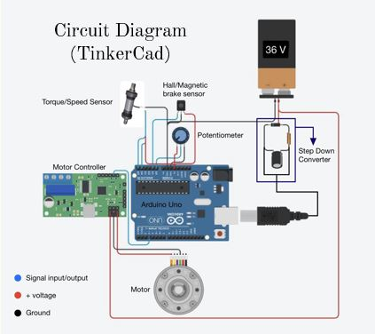
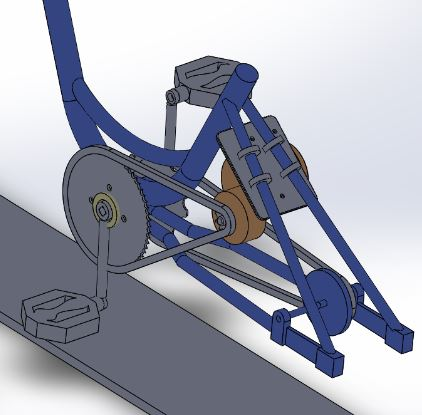
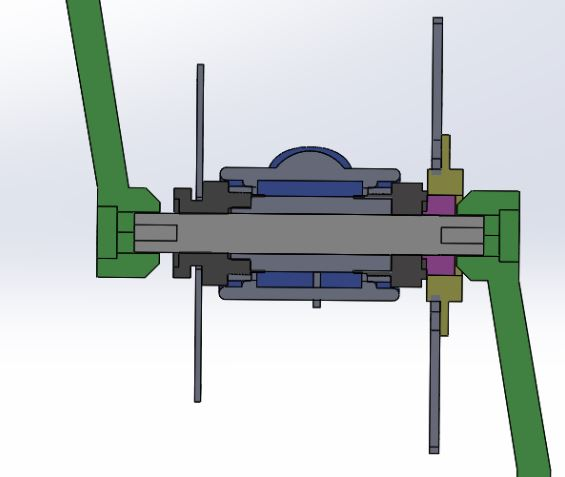
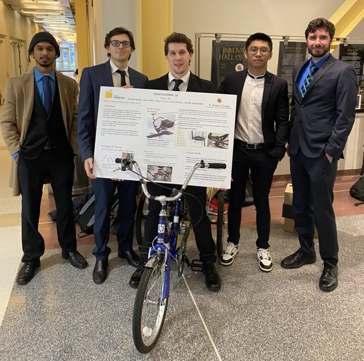

As my Capstone project, my team was sponsored by VME, often known as Volunteers of Medical Engineering, and were assigned a young client with spinalve is to i disability. The objective is to convert our client's personalized trike, which was created by the previous capstone team, and implement a motor-assisted pedal. Our client has been satisfied with the personalized trike, however, they expressed their struggles to pedal on an incline due to restricted physical movements. My team - consist of James Allen, Diego Ferreira, Kevin Holtman and Sachitch Seneviratne had to come up with a system that help assist them pedaling without taking away the fun and exercise aspect of biking experience.

I created a Circuit Diagram to better help explain the electrical subsystem of our solution. We would read user's input force on the pedal using torque sensor directly to Arduino Uno R3, which then would calculate just the right amount of force needed to assist user without reducing their efforts. Arduino would send the value to Motor Controller to dictate how much energy the motor should produce before assisting back to the pedal. The system is also equipped with Hall/Magnetic sensor located on the brake lever. The purpose is to shut the motor completely once brake lever is triggered to prevent the motor from continuously accelerating when not needed.
Potentiometer is included to manually adjust or limit the motor's maximum output. Step down converter is also required to convert 36V from battery to 5V. Furthermore, since it's designed for a disabled individual, we included an energency button which shuts the whole system down and manual activation is required.

Motor is mounted by a bracket we created in the workshop. The motor chain is linked to a separate chainring driven by the motor. Clutch system is also inserted to allow neutral drive for motor without resisting the user.
With specifications of 36V, 350W, 12A rated current with 9 tooth sprocket, it could produce maximum power of 150RPM * Max Torque we want to supply. Our maximum target speed is 20 RPM on pedals by motor for comfort reasons. Therefore, 350-W/(150 RPM * 2pi/60) = 22.28 N-m 0.15 m pedal crank means 22.28 N-m/0.15 m = 148.5 N 148.5/9.81 m/s2 = 15.14 kg = 33.38 lbs 150/20 = 7.5 gear ratio 9 teeth * 7.5 = 67.5 teeth on chainring sprocket = ~59-tooth standard resulting in 6.56 gear ratio thus 150/6.56 = 22.9 RPM 6.56 * 33.38 lbf = 219 lbs > min of 200 lbs.

Since the torque sensor shaft is located in the bottom bracket, we have designed an assembly sleeve to provide a base for all components such as the chainring, motor chainring, pedal cranks, freewheel clutch, clutch adapter, torque sensor shaft, stator, and adapters.
Engineering students are widely familiar with Arduino Uno, it is a simple microcontroller to program and calculate any desired input as we have used it many times for our projects. With our given budget, could have easily gotten a better controller and it might have been easier to navigate. However, we took this project as a challenge to implement what we have learned from our classes and to show young individuals, specifically our client, that they too could impact the future lives by having the curiousity to learn.
This capstone project has not only provided us with invaluable technical experience but also honed our project management and teamwork skills. Despite numerous challenges, our team persisted, resulting in a successful and functional prototype.
Having to work with such lovely client made us remember why we wanted to be engineers in the first place, is has been confirmed that another capstone team would further improve our prototype design. I am thrilled to express my gratitude to our instructors and VME for entrusting this project to our team. This project was a significant step in our engineering journey, and we look forward to bringing more innovative solutions to real-world challenges.
